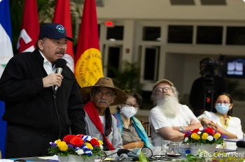

26
26Daniel Ortega inventó un “tío abuelo obispo” para atacar con virulencia a la Iglesia

Su hermano Humberto Ortega lo desmiente: Marco Antonio Ortega no era un obispo 'cómplice', sino el abuelo que abogó por su padre Daniel Ortega en 1934